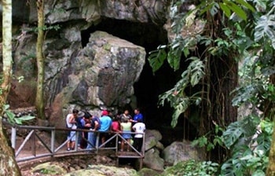

Tegucigalpa.- A partir del 2016 vamos a trabajar en la zona para crear los accesos a éste monumento natural y acondicionar su interior para ofrecer seguridad y comodidad a los visitantes”, dijo Silvestri, complacido por el apoyo mostrado desde ya por los diputados del departamento de Olancho y las autoridades locales.
Destacó que el proyecto de recuperación de las Cuevas de Talgua incluye la construcción de un museo donde van a ser exhibidas las piezas que durante el proceso de investigación vayan siendo recuperadas de la denominada Ciudad Blanca.
Las Cuevas de Talgua, ubicadas en el municipio de Catacamas, departamento de Olancho tienen una antigüedad aproximada de 1500 años A.C y se cree que fue un cementerio de líderes de mucho linaje de una cultura indígena de la cual poco se sabe.
Su importancia, de acuerdo a los estudios, es por los 28 nichos encontrados en un cementerio que podría tener unos 800 años de antigüedad. La característica de las osamentas descubiertas, según se ha comprobado, es su tono fosforescente por acción de la misma naturaleza.
La recuperación de la zona turística de Talgua traerá muchos beneficios al país, al departamento de Olancho y especialmente al municipio de Catacamas, que cuente con su propia pista aérea y una diversidad de hoteles grandes y pequeños para los visitantes nacionales e internacionales.
Emilio Silvestri aseguró que Catacamas con sus encantos naturales, históricos y gastronómicos entrará en la estrategia del próximo año como destino recuperado.